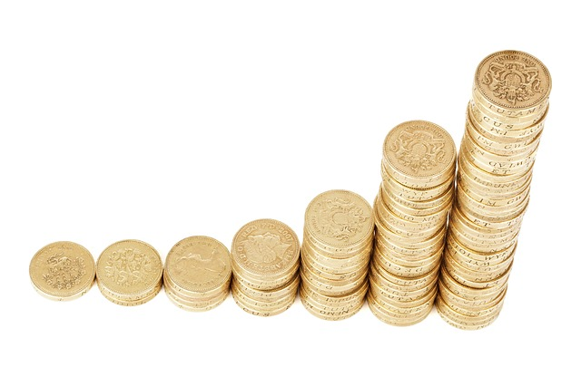

El Ibex cierra plano a la espera de acontecimientos durante le resto de la semana
Capitulo 1
Capitulo 2
Capitulo 3
Capitulo 4
Capitulo 5
Capitulo 6
Capitulo 7
Este lunes hemos asistido a una jornada que, además de haber sido un tanto atípica debido al día festivo en Wall Street (día de Martin Luther King), ha estado falta de catalizadores macro que animaran a las principales plazas a tomar un rumbo claro.
Cap 1
Esto se ha traducido en una sesión aburrida y con poco volumen en la que el Ibex se ha movido en un rango muy estrecho y ha acabado cerrando con una inapreciable subida del 0,05% que le deja en los 10.467 puntos. El índice se encuentra consolidando niveles y a la espera de nuevos catalizadores que le lleven a asaltar los 10.500 puntos.
Volver al Inicio
Cap 2
 Los principales índices europeos han cerrado con signo mixto con la moneda única obcecada en seguir ganando enteros con respecto a la divisa norteamericana. La paridad eurodólar ya se encuentra en el 1,226 marcando máximos de 3 años apoyada por factores como las positivas perspectivas macro, o las buenas noticias procedentes de Alemania en cuanto a proceso de coalición del gobierno.
Volver al Inicio
Los principales índices europeos han cerrado con signo mixto con la moneda única obcecada en seguir ganando enteros con respecto a la divisa norteamericana. La paridad eurodólar ya se encuentra en el 1,226 marcando máximos de 3 años apoyada por factores como las positivas perspectivas macro, o las buenas noticias procedentes de Alemania en cuanto a proceso de coalición del gobierno.
Volver al Inicio
Cap 3
Como cada vez que el euro se fortalece, son las bolsas de Francia y Alemania las más perjudicadas. En el día de hoy el DAX ha perdido un -0,34% y el CAC un -0,13%).
Volver al Inicio
Cap 4
A diferencia de las sesiones anteriores, hoy ha sostenido al selectivo todo el conjunto del sector eléctrico, con repuntes del 3,36% en Acciona, del 0,76% en Enagás o del 1,43% en Endesa después de que Goldman Sachs elevara su potencial hasta los 19,50 euros por título. Entre medias se han colado dos de las peores del Ibex el año pasado, pero que han comenzado bien el año: Siemens Gamesa (+2,57% hoy y +11,59% en 2018) y Técnicas Reunidas (+0,92% hoy y +7,48% desde inicios de año.
Volver al Inicio
Cap 5
Por el lado de las caídas se ha situado la aerolínea IAG (-2,57%) y supermercados DIA (-1,79%), que hoy recibía malas recomendaciones de las casas de análisis Oddo y Kepler.
Volver al Inicio
Cap 6
La noticia corporativa más destacada ha venido procedente del Reino Unido; Carillion, uno de los principales grupos de construcción y servicios del país, ha anunciado hoy su entrada en un proceso de liquidación, al no poder hacer frente ar una deuda financiera superior a los 1.000 Mn€. Se habla de que Santander UK sería uno de los bancos perjudicados, lo que explica en parte la caída del -0,30% en los títulos de Banco Santander en el día de hoy.
Volver al Inicio
Cap 7
En el mercado de Deuda Pública, destacamos que el Tesoro español pretende captar alrededor de 9.000 Mn€ en deuda pública en las subastas previstas para mañana y el jueves. Por otra parte, la rentabilidad del bono español a 10 años se dispara un 1,53%, situándose la prima de riesgo en 94 puntos básicos.
Volver al Inicio